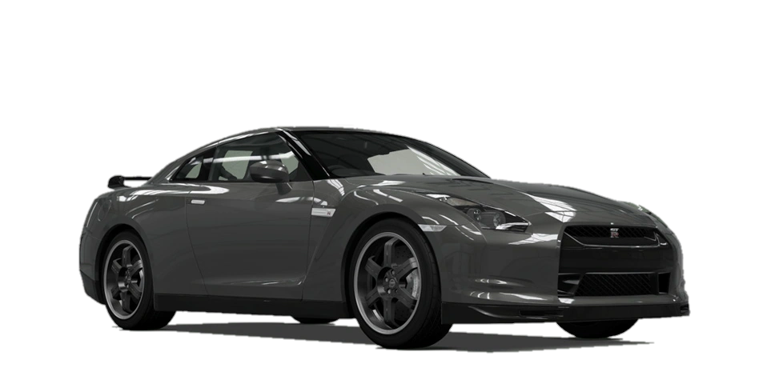

# Nissan GTR Spec V
Nissan GTR Spec V
The Nissan GTR Spec V is a high-performance version of the iconic GTR, known for its incredible speed and advanced technology.
Specifications
- Engine: 3.8L V6 Twin-Turbo
- Power: 530 hp
- Torque: 448 lb-ft
- 0-60 mph: 3.5 seconds
- Top Speed: 195 mph
Features
- Lightweight Carbon Fiber Components
- Advanced Aerodynamics
- Upgraded Suspension System
- Enhanced Braking System
Photo Section
